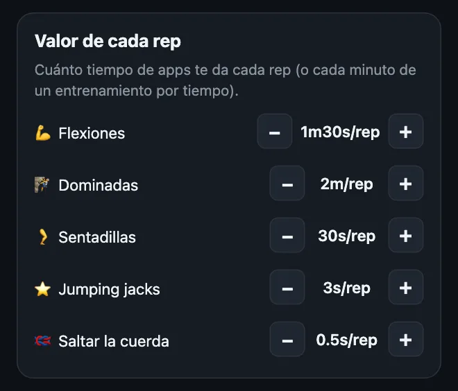

¿Cuánto tiempo de pantalla debería valer una flexión?
¡Hola a todos! En HonorFit, cada rep que registras compra tiempo de apps, y el precio lo pones tú. Es la pregunta que más me hacen después de configurarlo: ¿cuánto debería valer una flexión? ¿Un minuto? ¿Diez segundos? Así es como lo pienso yo.
Los valores por defecto
Si no tocas nada, esto es lo que tienes:
| Ejercicio | Gana por defecto |
|---|---|
| 💪 Flexiones | 1 minuto por rep |
| 🧗 Dominadas | 1m30s por rep |
| 🔥 Abdominales, 🦵 Sentadillas | 30 segundos por rep |
| Cualquier ejercicio que añadas | 30 segundos por rep |
| Entrenamientos por tiempo (caminar, yoga, HIIT) | 30 segundos por minuto |
| Entrenamientos por distancia | 5 minutos por km, u 8 por milla |
| 👟 Pasos | 3 minutos por cada 1.000 pasos |
O sea, 20 flexiones son 20 minutos de Instagram. Para mucha gente, eso está bien para empezar. Para otros es demasiado generoso o demasiado tacaño. ¿Cuál es tu caso?
Una forma de elegir en una línea
Piensa en dos números:
- ¿Cuánto tiempo en tus apps bloqueadas te parece bien en un día normal? Sé sincero, no pongas el que te gustaría.
- ¿Cuántas reps harías de verdad por ese tiempo, repartidas a lo largo del día?
Luego divide: valor por rep = tiempo ÷ reps. ¿Quieres una hora de TikTok por 60 flexiones? 1 minuto por rep. ¿Quieres esa misma hora pero te ves capaz de 120 sentadillas? 30 segundos por sentadilla. No tiene más misterio.
Si tu respuesta al número 2 es «no muchas», también está bien. Ponles un precio alto a las reps y usa una base diaria (Ajustes, gratis) para empezar cada día con algo de tiempo ya guardado.
Algunas configuraciones para copiar
| Ejercicio | Cada rep gana | Lo que te da una serie |
|---|---|---|
| Flexiones (principiante) | 1m30s | 10 flexiones = 15 minutos |
| Flexiones (si ya llevas un tiempo con esto) | 30 segundos | 40 flexiones = 20 minutos |
| Jumping jacks | 3 segundos | 100 jumping jacks = 5 minutos |
| Saltar la cuerda (por salto) | 0,5 segundos | 600 saltos = 5 minutos |
| Dominadas | 2 minutos | 5 dominadas = 10 minutos |
| Correr (distancia) | 6 minutos por km | una carrera de 5 km = 30 minutos |
La regla general: cuanto más fácil y rápida es una rep, menos debería valer. Un jumping jack lleva más o menos un segundo, así que no debería comprar lo mismo que una dominada.
Los botones −/+ son más precisos en la 1.18.0
Hasta hace poco, el valor más pequeño era 5 segundos, lo que hacía difícil ponerles precio a las reps superrápidas (saltar la cuerda, jumping jacks), y pasar de 3 minutos a 10 costaba una eternidad. Un usuario me escribió por las dos cosas, así que en la 1.18.0 los botones −/+ siguen una escala más inteligente:
- Menos de 5 segundos: 4, 3, 2 y 1 segundo, y luego 0,5, 0,25 y 0,1 segundos.
- De 5 segundos a 1 minuto: pasos de 5 segundos.
- De 1 a 3 minutos: pasos de 15 segundos.
- De 3 a 10 minutos: pasos de 30 segundos.
- Más de 10 minutos: pasos de 1 minuto.
Los encontrarás en dos sitios:
- Ajustes → Valor de cada rep: una fila −/+ por ejercicio. Lo más rápido si solo quieres retocar un precio.
- Ajustes → Ejercicios → Editar: el editor completo, donde además añades, renombras y quitas ejercicios, y cambias entre reps, minutos y distancia. La guía completa está en cómo personalizar tus ejercicios.

Señales de que el precio no es el adecuado
- Te pillas registrando reps que no hiciste. Tu tiempo es demasiado caro. Es el sistema de honor diciéndote algo. Sube los valores paso a paso hasta que no te den ganas.
- Tu saldo nunca se acaba. Tu tiempo es demasiado barato. Baja los valores uno o dos pasos, o bloquea una app más.
- Haces tus reps y te fastidia. Seguramente el problema es el ejercicio, no el precio. Cámbialo por algo que no odies. Una caminata cuenta. Y también los movimientos más suaves.
- Acumulas horas y te las fundes todas por la noche. Activa Reiniciar a medianoche (gratis) para que el tiempo sin usar no se vaya amontonando.
Dale a cualquier ajuste nuevo una semana más o menos antes de volver a cambiarlo. Los primeros días son raros hagas lo que hagas.
Modo difícil y modo enfermo
Para los días que no encajan con tu configuración de siempre, hay un botón 💀 Difícil que puedes poner en el encabezado de Inicio (Ajustes → Modo difícil y enfermo, gratis). Tócalo una vez y cada rep gana la mitad. Tócalo otra vez para el 🤒 modo enfermo, en el que cada rep gana el doble, para cuando no te encuentras bien. Tócalo de nuevo para volver a lo normal. Tus valores reales nunca cambian, así que no hay nada que deshacer.
No soy entrenador: yo hago la app, no soy coach. Si un ejercicio te duele, para, y si tienes una lesión o algún problema de salud, pregúntale a alguien que conozca tu cuerpo qué es lo adecuado para ti. Luego configura HonorFit en torno a eso.
HonorFit Blocker es un bloqueador de apps gratis para iPhone y Android. Tú eliges los ejercicios y lo que valen. Sistema de honor, sin cámara, nada sale de tu teléfono.